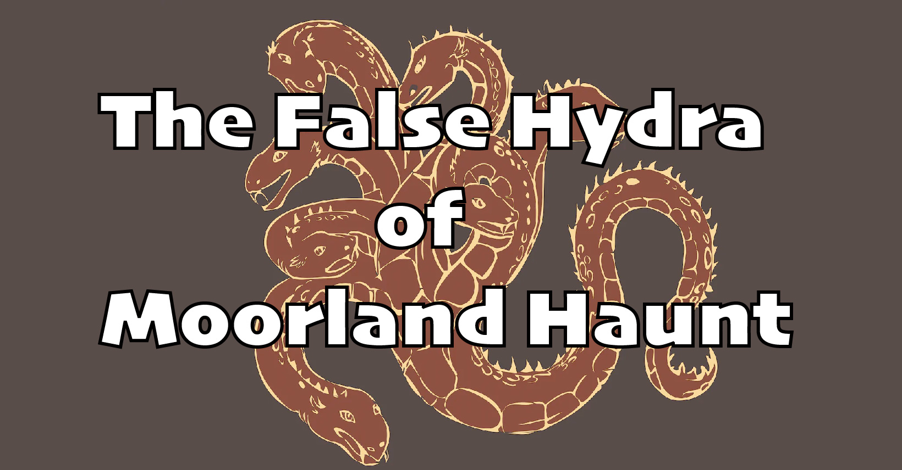

The False Hydra of Moorland Haunt
Rugatha Legends

Rugatha Legends
幾位零散的冒險者分別來到了俗稱鬧鬼荒野（Moorland Haunt）的卓茲蘭（Drogsland），一座在麥丁頓王國邊界的小鎮，但他們對於自己如何來到這裡卻毫無記憶。
潮酷小子、Uko、HeNeb，與嘎拉嘎拉分別來到了當地的酒館 Silence，因為彼此的怪異而互相注意到了對方。在互相認識後，眾人向酒館老闆 Joseph 的老婆 Sarah 聽聞了附近的雜貨店，並前往購物。潮酷小子買了一本故事書，封面只寫了大大的「Tales」的字樣，但是內容他並未先閱讀過。
日落後，鬧鬼荒野的居民們早早便回到了住處，不再出門。四位冒險者閒晃到了外頭樹林邊，聽到了「嘶嘶」的聲音，以及一個難以形容，如賽連般引人入勝的歌聲。眾人覺得有點不安且不適，便趕緊回到他們於 Silence 二樓的租屋處休息。
夜晚，雙人房內的 Uko 坐在床邊準備為潮酷小子唸床邊故事，翻閱起 Tales，卻發現裡面的內容十分恐怖，不像適合唸給孩子聽的。他在故事中反覆看見一個被提及的貴族 Dax 爵士，看起來似乎是居住在鬧鬼荒野的一名貴族。回頭一看，Uko 發現潮酷小子已經睡著了，便闔上書本也休息去了。
隔天一早，眾人起床後紛紛下樓，卻發現站在櫃檯後自稱是「老闆」的，是昨天大家眼中 Silence 的店小二 Jacob，而自知沒有妹妹的潮酷小子也在自己的背包內翻到一封信，署名 Cera，自稱是他的妹妹，且信的字跡看起來就是小孩寫的。大家感到疑惑，決定在鎮上尋找答案。
經過 Jacob 的推薦，大家決定去找當地的醫生 Dr. Crow。他的「診所」佈置得像個叢林迷宮般，裡面難以定位。Dr. Crow 和大家說明自己是個巫醫，平常幫人看病，偶爾也會照顧動物。覺得自己似乎記憶出了點問題的潮酷小子請 Dr. Crow 為他檢查。坐在看診的椅子上，眾人又聽見了那嘶嘶聲。Dr. Crow 告訴潮酷小子他的身體沒有問題，放了他下來。接著，大家聽見了一陣狗叫聲，一隻米克斯犬跑向了 Dr. Crow，稱為 Marco。Marco 不斷朝著牆角叫，Uko 用了與動物溝通的方法，了解了 Marco 雖然沒有看見黑影處有任何東西，卻聞到了很重的腐臭味。Marco 答應帶他們追蹤這個氣味。這時，大家又聽見了嘶嘶聲，不過除了自稱是獸醫的 Dr. Crow 和 Marco 外，這個空間也只有嘎拉嘎拉、潮酷小子、HeNeb，和 Jiaheng 而已。
眾人跟隨著 Marco 的帶領，先跑到了當地的教堂。教堂看似廢棄，裡面完全沒有人。簡單調查後，卻發現前面的講台竟然刻有 Neheb, the Worthy（HeNeb 對外自稱的名字）。同時，已經無法和大家直接溝通的 Marco 也朝著牆角大聲吼叫。
「隱形蛇！」
Heneb
大家找不到牆角有什麼東西，卻看見 Marco 又跑了。追著 Marco，大家經過了雜貨店，又回到了 Silence。Jacob 疑惑的看著大家，但 Marco 衝進了吧台後方通往廚房的方向，大家看見廚房內的木門便用力撞開，裡面一片黑暗。只有傳出嘶嘶聲。機警的嘎拉嘎拉趕緊拿出背包內的被褥撕成棉絮，讓大家塞入耳中。點起火把，大家終於看見隱藏在黑暗中的可怕生物——一隻以眾人記憶為食，披著人皮在地上匍匐的三頭怪物。一隻 false hydra。
「Jiaheng，為什麼？」
眾人被吞食記憶前所說的最後一句話